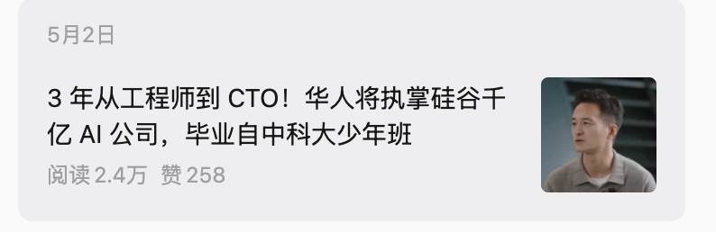
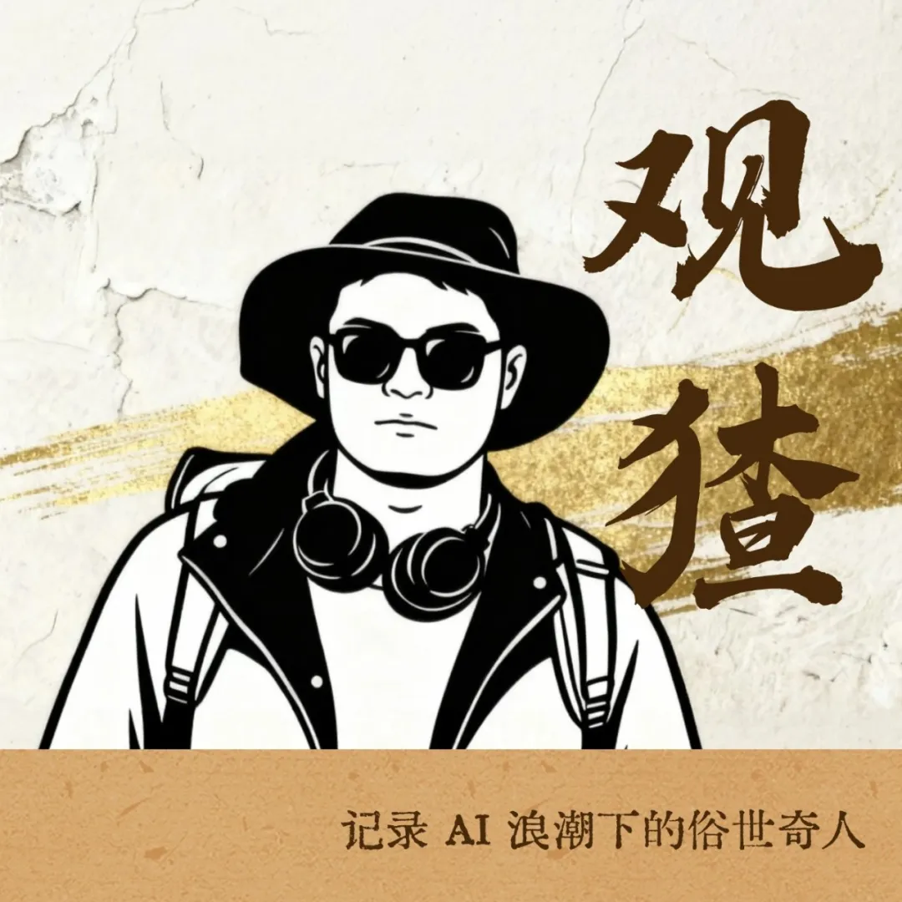
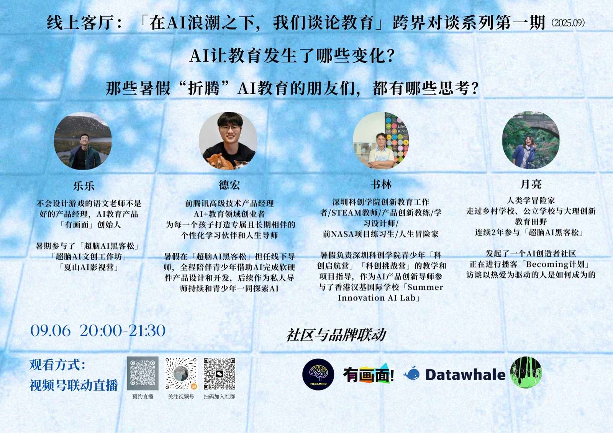
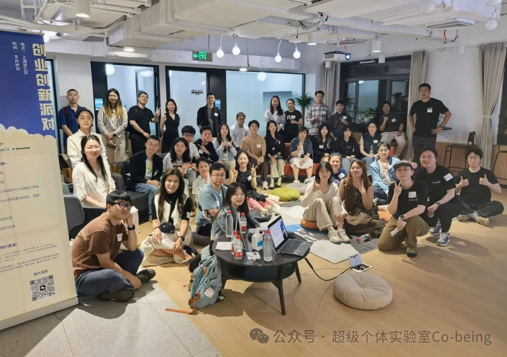

大理：AI 慢慢成为田野底色
我从创新学校、数字游民社区、家长和老师的谈话里，第一次具体感到 AI 正在改变教育。
创新教育 / 数字游民 / 田野调查月亮 / 向 AI 走去的人类学冒险家 / Field Storyteller
我是月亮，一个向 AI 走去的人类学冒险家。
从大理创新教育和数字游民田野走来，在上海做 AI 创新教育和创业孵化；我发起「超级个体实验室」，也为创业者、出海团队和科技现场写故事。
我现在最稳定的内容入口：AI 开源社区与基础设施、Agent 与 AI 原生组织、Physical AI / AI 硬件、中国 AI 团队出海，以及从开源社区和孵化器里长出来的年轻 builder。
AI 开源生态、Agent 产品、硅谷科技人物、出海团队和大型科技事件。
Becoming计划、AI教育田野志，持续和创造者、教育实践者、开发者和研究者深聊。
在孵化器期间发起超级个体实验室，也把 AI 跨界客厅、AI 跨城客厅做成持续见面的现场。
Reader Map
这份作品集会出现很多地点、人物和项目。先把它理解成三类能力：我能写什么，我能把哪些 AI 议题继续拆下去，以及我已经做过什么。
Becoming Journey
我想从大理讲起。那时我还在做创新教育田野，AI 像一个新的底色，慢慢进入我的观察，后来又把我带进更真实的创业现场。
2023 年底，我在大理做创新教育田野。数字游民社区办第一场数字游民大会，教育分论坛聊“AI 时代，做面向未来的教育”。那时候 GPT 时刻刚刚到来不久，我还在慢慢摸索怎么用它，创新学校里的孩子已经开始用 AI 学芬兰语了。
这件事给了我很强的触动。AI 对教育的改变，最早是以很小的方式出现在我面前：一个孩子的学习，老师和家长的日常讨论，很多家庭重新寻找教育出口的过程。大理的田野让我练习坐下来听人说话：有的妈妈会把城市学校里的卡顿、家庭里的紧张、孩子如何被老师一点点打开讲给我听，讲到后来掉眼泪。
后来，因为一次很重要的缘分，我来到上海，进入 AI 创新教育和创业孵化现场。AI 夏令营、青少年黑客松、孵化器路演、白板旁的用户反馈、深夜修改方案，把我带到产品还很早、团队还很小的地方。默子、核蛋、小鹅、Tim、乐乐，还有很多早期 builder，都是在这些还没有被整理成“案例”的时刻被我遇见的。
超级个体实验室也是在这段经历里长出来的。它从一次次线下见面，慢慢长成 700+ AI 创造者社区；WAIC 之后的派对，又把研究者、创业者、投资机构和开发者社区带到同一个夜晚。再往后，这些人和现场进入人物稿、创业团队故事、AMD / Datawhale 开发者生态报道、硅谷科技人物、新加坡出海和复旦 / UCL 工作坊，变成可以被打开、被回看的作品。
我从创新学校、数字游民社区、家长和老师的谈话里，第一次具体感到 AI 正在改变教育。
创新教育 / 数字游民 / 田野调查AI 夏令营、青少年黑客松和孵化器，把我带到早期产品、年轻团队、路演和用户反馈旁边。
AI 创新教育 / 黑客松 / 创业孵化超级个体实验室从一次次见面长出来，也把开源学习者、投资机构、教育实践者和年轻创业者接到一起。
年轻 builder / 开源社区 / 创投生态人物稿、生态报道、播客、活动复盘和交互档案，是我把这些人和现场留下来的方式。
人物稿 / 团队故事 / 科技事件家长、老师、创业者和开发者愿意把自己的经历讲出来，故事才有最初的材料。
白板、路演、用户反馈、开源项目和早期产品，会露出一个团队真正的判断。
技术人、非技术创造者、投资人和教育实践者在同一个场域里见面，新的线索会慢慢浮出来。
文章、播客、活动复盘和交互档案，让一次见面可以继续被回看、被连接。
Work Samples
我希望这些作品被放回几条可以继续生长的系列里：Becoming计划、AI教育田野志、AI跨界客厅、AI跨城客厅、AI浪潮下的超级个体访谈，以及大型产业事件叙事。

大型产业事件叙事。发生在 AMD AI 开发者日现场，我把 AMD、苏姿丰、ModelScope、Datawhale、ROCm、开发者工作坊、开源贡献者、研究者社区和青年 builder 放在同一张现场地图里，写清顶尖技术现场如何拥抱国内 AI 开源生态，以及算力、模型、工具链和开发者社区怎样互相牵动。
Read the case ↗
硅谷科技人物稿。用公开材料和行业语境，整理华人技术领导者的工程路径、公司机制、平台生态和 AI 商业判断。阅读 2.4 万。
Open article ↗
默子 / Redink 案例。这个系列关注 AI 浪潮下的“俗世奇人”：一个 00 后 builder、一款开源产品和突然涌来的用户反馈，重点写人如何在真实工作流里修正产品。
Open article ↗
系列栏目。追问一个以热爱驱动、保有主体性的人怎样长出来；从大理线下分享、播客长谈到人物文章，持续记录创造者怎样形成判断、选择工具和走向行动。
Listen ↗
系列栏目。和乐乐一起持续对谈国内、硅谷和欧洲的 AI 教育实践者，我负责主持、追问、整理现场反馈，把教育现场里的 AI 使用、元能力和产品判断留成系列。
Listen ↗
AI跨界客厅系列。和 Research AI+ 等伙伴一起，把研究者、创业者、投资机构和开发者社区带到同一个夜晚，围绕 Agent、开源生态、多模态和工具链形成 9 个圆桌，再把现场转成可传播的记录。
Open recap ↗
AI跨城客厅系列。把良渚、上海和不同社区里的 AI 创业者、社区组织者和创造者带到一起，记录一座城市和另一座城市之间，生活方式、创业判断和技术浪潮怎样彼此照亮。
Open recap ↗
交互叙事。把 28 个创造者故事整理成地图、展厅和游乐园，让人物、命题和时代情绪可以被再次打开。
Enter museum ↗Research Desk
每条线索后面都有我进入过的现场和可以继续回访的人：孵化器、活动现场、播客长谈、开发者社区和海外交流。它们适合发展成深度访谈、圆桌、人物稿和系列长文。
我会追问：当 Agent 开始接管开发、对齐、排查和 review，工程师、产品经理、市场和创始人的边界怎样变化。这个题目适合从真实团队、工作流和失败案例里拆。
Agent / Harness / 组织效率 / 一人公司AMD / Datawhale 现场让我看到，连顶尖技术现场也在拥抱国内 AI 开源生态。我长期浸润在 AI 开源社区、孵化器和创业现场，更能看见模型、算力、工具链、开发者和社区组织之间怎样形成真实关系。
Datawhale / ModelScope / ROCm / 开源社区 / 孵化器从 AI 教育田野志、青少年黑客松到硅谷和欧洲教育访谈，我更关心一线老师、家长和教育创业者怎样重新理解学习、创造力、判断力和主体性。
教育科技 / 元能力 / 青少年 builder新加坡出海、Manus、Google、TikTok 新加坡团队交流，以及复旦 / UCL 工作坊，让我开始追问：产品、叙事和组织进入跨市场环境后，会被怎样重新翻译。
新加坡 / 硅谷 / 跨文化 / 出海默子、乐乐、Tim 和超级个体实验室里的早期创造者，让我持续观察一个问题：在 AI 工具、开源社区和小团队时代，一个人如何形成判断、找到用户、走出作品。
00 后创业者 / 开源项目 / AI 应用层 / 创造者社区从乐乐进入硅谷 AI 硬件创业，到 Frontier X 这样的 Physical AI 出海团队，我想继续看见 AI 从屏幕、软件和工作流走向身体、空间和真实世界时，会遇到哪些产品和市场问题。
AI Hardware / Physical AI / 机器人 / 出海团队很多早期团队产品变化很快，创始人判断也在变化。我关心他们怎样向用户、投资人、开发者和海外市场讲清楚自己，以及内容如何参与一个早期团队的战略表达。
Founder Story / Product Narrative / 市场教育 / 内容系统AI跨界客厅、AI跨城客厅、WAIC 派对和 AMD 开发者日让我看到：真正有价值的选题常常从一次见面、一场圆桌、一段会后夜谈里长出来。活动可以承担传播、内容采集和关系生长几件事。
AI 跨界客厅 / AI 跨城客厅 / WAIC / 开发者大会Track Record
这组数字对应内容团队会关心的几个问题：有没有采写基本功，有没有稳定的人和选题来源，能不能主持、组织现场、持续做栏目，以及能不能把中国 AI 创业放进技术和海外语境里看。
在报社与融媒体中心做过新闻、时评、实地走访、专家联系和栏目策划，知道一篇稿子从线索到成稿怎么跑。
在 AI 孵化器期间从 0 到 1 发起超级个体实验室，连接创业者、开发者、设计师和教育者，选题和采访对象有真实关系来源。
WAIC 期间组织 AI 研究者创业者派对，围绕 Agent、开源生态、多模态和工具链等议题形成 9 个圆桌，现场报名 170+。
通过播客、直播、活动和人物稿持续对话 AI 创业者、教育者、开发者与研究者，能把一次聊天推进成可发布内容和下一轮选题。
共同发起 AI 教育田野志，公开节目覆盖中国一线实践、美国/硅谷与伦敦教育创新，能持续围绕一个问题做栏目。
新加坡 AI 出海、硅谷科技人物研究、复旦 / UCL 跨文化工作坊和海外教育访谈，让我用英文资料和海外现场校准国内 AI 故事。
Method
我做内容时，最信任的还是现场。先和人建立关系，慢慢听见真实经历，再把分散在活动、访谈和社区里的材料整理出来。
我很早就发现，自己好像很容易让人把真实经历讲出来。本科做电台时，我请校园里卖煎饼的阿姨走进直播间，讲她自己的生活。后来在大理做田野，家长会把孩子从封闭到慢慢打开的过程讲给我听，有人讲到落泪。
来到上海之后，这种能力进入了 AI 创业现场。孵化器路演、AI 夏令营、黑客松白板、WAIC 后的夜谈、AI 教育田野志的线上客厅，让我持续遇见早期团队、投资人、平台团队、开源学习者、教育实践者和年轻创业者。
我写一个人时，会继续往外看：他怎样找到用户，产品如何被使用，背后有哪些社区、资本、平台和市场语境。写默子时，我追的是一个 00 后 builder 如何把开源项目推向真实使用；写 AMD 和 Datawhale 时，我追的是顶尖技术现场为什么拥抱国内 AI 开源生态；写葛小川时，我把公开材料放回硅谷公司的工程路径和商业机制里。
AI 对我来说更像工作台：整理采访、搭建知识库、索引材料、检查线索，也帮助我做交互原型。真正的判断，还是要回到现场、关系和一轮又一轮的追问里。最后的产出可能是人物稿、生态报道、播客、活动复盘、问题清单，也可能变成生命力博物馆这样的交互档案。
孩子用 AI 学语言，老师把 AI 带进项目制学习，家长重新理解学习和成长。
一个人如何从兴趣、开源项目、黑客松、社群和孵化器里找到用户和方向。
Datawhale、开源学习者、数字游民和 AI 创造者社区，如何让工具、知识和人流动起来。
新加坡出海交流、海外教育访谈、复旦 / UCL 工作坊和硅谷科技人物，帮助我校准跨市场叙事。
Narrative Residency
进入早期 AI 团队 2-3 个月，理解产品、用户、创始人判断和市场语境，再把这些材料整理成可复用的叙事系统。
这里保留的是我正在进入的团队现场：产品还在迭代、市场还在校准、团队正在寻找更准确的表达方式。
围绕 AI 创业者、社区案例和具体人物故事，整理栏目线索、访谈方向和长期叙事主线。
从开源学习者、开发者活动和技术现场进入，观察国内 AI 开源生态如何通过社区和协作长出来。
Physical AI 出海美国市场团队。围绕创始人判断、产品场景和跨市场表达，整理进入海外语境的叙事材料。
在 AI 创新教育、创业孵化和年轻 builder 生态中，持续观察早期团队如何从想法走向产品和市场。
Archive Desk
原文、节目和活动记录收在这里，像编辑桌上的线索卡。读完前面的旅程，再从这里继续打开具体作品。